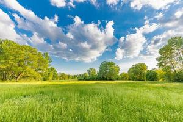
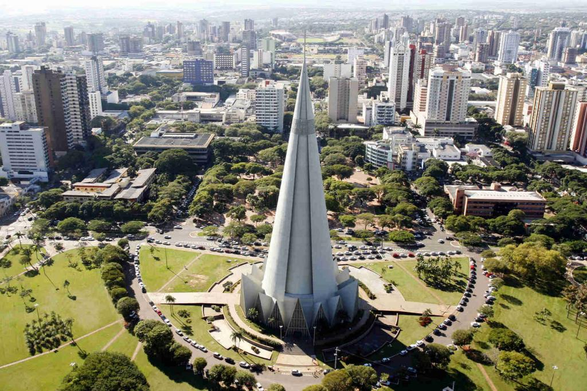

Da tranquilidade do campo...
Morar no campo oferece tranquilidade, ar puro, espaço ao ar livre e uma comunidade unida. No entanto, pode haver desafios, como distância dos serviços, conectividade limitada e menos oportunidades de emprego. O custo de vida pode ser menor, e o estilo de vida é frequentemente mais simples e voltado para a natureza, promovendo a autossuficiência e a preservação cultural.

...Para a agitação da cidade
Morar na cidade oferece conveniência e oportunidades de emprego, mas pode ser agitado e caro. A vida urbana é dinâmica, com acesso a uma variedade de serviços e opções culturais, mas também apresenta desafios como tráfego congestionado e espaços limitados.